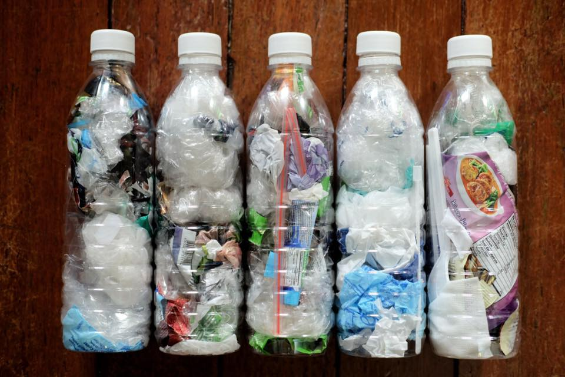
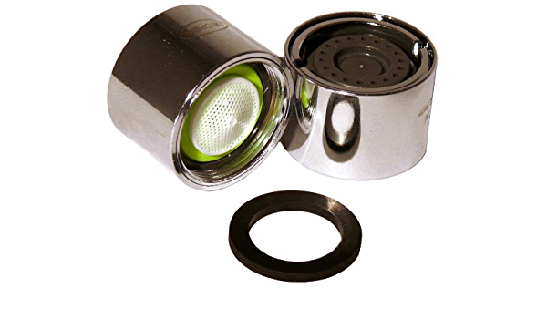

Eco Bricks
Put all your wrappers in a used plastic bottle, the bottles serves as building blocks or for decoration. So much waste plastic in so little space!

Tap aerators
Aerators on tap can reduce water wastage by a great extent. It gives a streamline flow to water. A basic and simple way!
Aerators on tap can reduce water wastage by a great extent. It gives a streamline flow to water. A basic and simple way!
 E-Waste Management
E-Waste Management E-Waste contains substances like mercury, lead, cadmium which are harmful for environment. Fact worth mentioning is that the recent tokyo olympics' medals were made from E-waste!